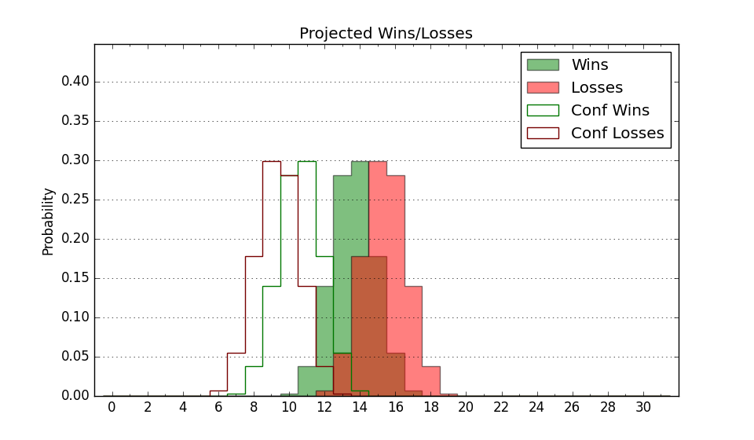

| Home | Game Probabilities | Conferences | Preseason Predictions | Odds Charts | NCAA Tournament |
| City: | Highland Heights, Kentucky | |
| Conference: | Horizon (7th)
| |
| Record: | 6-6 (Conf) 9-12 (Overall) | |
| Ratings: | Comp.: -3.7 (200th) Net: -3.7 (202nd) Off: 102.3 (220th) Def: 106.0 (197th) SoR: 0.0 (166th) |
| Remaining | ||||||
|---|---|---|---|---|---|---|
| Date | Opponent | Win Prob | Pred. | |||
| 2/8 | Oakland (143) | 50.9% | W 73-72 | |||
| 2/10 | Detroit (359) | 94.2% | W 80-61 | |||
| 2/14 | @ Green Bay (205) | 36.0% | L 64-68 | |||
| 2/17 | @ Milwaukee (251) | 42.2% | L 76-78 | |||
| 2/22 | Cleveland St. (220) | 67.8% | W 76-70 | |||
| 2/25 | IUPUI (361) | 95.3% | W 80-60 | |||
| 2/28 | @ Robert Morris (275) | 48.3% | L 72-73 | |||
| 3/2 | @ Wright St. (154) | 25.4% | L 78-86 | |||
| Previous | Game Score | |||||
| Date | Opponent | Win Prob | Result | Off | Def | Net |
| 11/6 | @Middle Tennessee (297) | 55.8% | L 57-74 | -14.0 | -11.9 | -25.9 |
| 11/9 | @Washington (71) | 9.8% | L 67-75 | -2.1 | 10.3 | 8.2 |
| 11/19 | @Cincinnati (34) | 5.8% | L 66-90 | 7.5 | -22.4 | -14.9 |
| 11/22 | Tex A&M Corpus Chris (215) | 67.4% | W 88-73 | 18.7 | -4.4 | 14.3 |
| 11/25 | LIU Brooklyn (358) | 94.0% | W 72-64 | -12.8 | -0.4 | -13.2 |
| 11/29 | Robert Morris (275) | 76.1% | W 77-59 | -1.4 | 18.6 | 17.2 |
| 12/2 | @IUPUI (361) | 85.6% | W 71-55 | -7.0 | 10.5 | 3.5 |
| 12/6 | @Illinois St. (216) | 37.8% | L 59-62 | -4.2 | 6.8 | 2.7 |
| 12/9 | Akron (89) | 32.6% | L 76-77 | 13.3 | -10.2 | 3.1 |
| 12/17 | @Eastern Kentucky (207) | 36.2% | W 85-75 | 13.5 | 7.7 | 21.2 |
| 12/21 | @Saint Mary's (19) | 3.9% | L 56-92 | 3.4 | -27.2 | -23.8 |
| 12/29 | @Fort Wayne (161) | 27.0% | L 60-73 | -14.5 | 5.0 | -9.5 |
| 1/4 | Youngstown St. (120) | 43.4% | W 79-76 | 17.2 | -6.9 | 10.2 |
| 1/7 | @Cleveland St. (220) | 38.2% | L 85-88 | 11.6 | -11.8 | -0.2 |
| 1/10 | @Oakland (143) | 23.4% | L 65-70 | -17.2 | 25.8 | 8.6 |
| 1/13 | @Detroit (359) | 82.6% | W 81-76 | 9.3 | -20.7 | -11.4 |
| 1/18 | Milwaukee (251) | 71.3% | W 90-72 | 14.3 | 5.7 | 20.0 |
| 1/20 | Green Bay (205) | 65.7% | W 74-52 | 16.0 | 16.7 | 32.6 |
| 1/25 | Fort Wayne (161) | 55.8% | L 58-63 | -23.0 | 14.1 | -8.9 |
| 1/28 | @Youngstown St. (120) | 18.4% | L 52-82 | -15.3 | -14.9 | -30.2 |
| 2/4 | Wright St. (154) | 53.7% | L 78-85 | -11.7 | -1.4 | -13.1 |
| Stats & Trends | |||||
|---|---|---|---|---|---|
| Current | Day | Week | Month | Season | |
| Composite | -3.7 | -0.7 | -0.6 | +0.8 | -0.2 |
| Comp Rank | 200 | -3 | -3 | +17 | -1 |
| Net Efficiency | -3.7 | -0.7 | -0.7 | +1.0 | -- |
| Net Rank | 202 | -5 | -5 | +21 | -- |
| Off Efficiency | 102.3 | -0.7 | -0.7 | -1.1 | -- |
| Off Rank | 220 | -12 | -16 | -41 | -- |
| Def Efficiency | 106.0 | -0.0 | +0.0 | +2.1 | -- |
| Def Rank | 197 | +1 | +8 | +71 | -- |
| SoS Rank | 217 | -8 | -3 | -4 | -- |
| Exp. Wins | 13.6 | -0.7 | -0.6 | -1.0 | -2.1 |
| Exp. Conf Wins | 10.6 | -0.7 | -0.6 | -1.0 | -1.7 |
| Conf Champ Prob | 0.4 | -0.8 | -1.6 | -6.5 | -20.1 |

| Advanced Stats | ||
|---|---|---|
| Stat | Value | Rank |
| Off Eff FG % | 0.487 | 240 |
| Off Ast Ratio | 0.132 | 234 |
| Off ORB% | 0.288 | 148 |
| Off TO Rate | 0.158 | 245 |
| Off FT Ratio | 0.369 | 86 |
| Def Eff FG % | 0.526 | 261 |
| Def Ast Ratio | 0.167 | 335 |
| Def ORB% | 0.319 | 321 |
| Def TO Rate | 0.173 | 45 |
| Def FT Ratio | 0.305 | 131 |